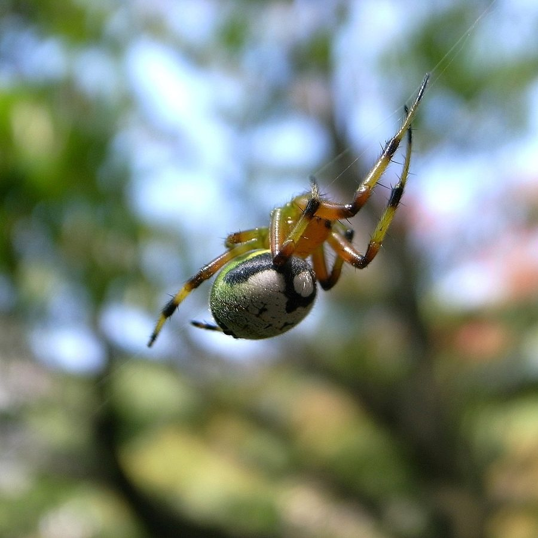

बागीचा मकड़ीKidney Garden Spider
Araneus mitificus · Araneidae · SPD-0007

- Scientific name
- Araneus mitificus (Simon, 1886)
- Family
- Araneidae
- Hindi
- बागीचा मकड़ी
- Status here
- native
- IUCN
- not evaluated
When to look कब देखें
Expected mainly in June, July, August, September, October, November.
बागीचा मकड़ी / Kidney Garden Spider
Araneus mitificus (Simon, 1886) — Araneidae
बागीचा मकड़ी (किडनी गार्डन स्पाइडर) — बगीचों के झाड़ों, फूलों के पौधों और बागों में पाई जाने वाली एक छोटी, सुंदर गोल-जाला बनाने वाली (orb-weaver) मकड़ी है। इसके पेट (abdomen) का रंग हल्का पीला-हरा या मलाईदार सफेद होता है, जिसके पिछले हिस्से पर काले रंग का एक विशिष्ट गुर्दे के आकार का (kidney-shaped) या घोड़े की नाल जैसा निशान होता है। इसी निशान के कारण इसे यह नाम मिला है। यह मकड़ी झाड़ियों के बीच लंबवत गोल जाला बुनती है और खुद जाले के कोने में एक मुड़ी हुई हरी पत्ती के भीतर बने रेशमी कोकून (retreat) में छिपी रहती है। यह जाले के केंद्र से जुड़े एक संकेत धागे (signal line) के कंपन से शिकार के फंसने का पता लगाती है। यह पूरी तरह से हानिरहित है और उड़ने वाले कीड़ों को नियंत्रित करने में मदद करती है।
Quick Identification त्वरित पहचान
| Feature | Description |
|---|---|
| Form | Compact, globular spider; abdomen is large, rounded, and wider at the anterior end |
| Colour | Pale green to yellowish-white abdomen; cephalothorax is light green or yellow-green |
| Markings | A prominent, dark brown or black kidney-shaped (reniform) mark on the posterior dorsal abdomen; front of abdomen has a thin black outline |
| Web | Vertical, circular orb-web built between branches, usually with one missing sector (pie-slice) near the top |
| Retreat | Hides inside a folded, silk-lined green leaf at the edge of the web |
| Legs | Greenish-yellow, semi-translucent, with fine spines and faint darker bands on the joints |
Field tip: Look for a small pale-green spider hiding inside a folded leaf at the edge of an orb-web in your garden. The black kidney-like smiley mark on its rear is unmistakable.
Morphology आकारिकी
Biometrics (typical measurements for adult specimens in local gardens of Basti):
| Measurement | Range |
|---|---|
| Body length (female) | 7.0–9.0 mm |
| Body length (male) | 5.0–6.0 mm |
| Leg span | 15–20 mm |
Cephalothorax: Small, flat, and covered with fine white hairs. It is greenish-yellow or pale olive-green. The eyes are eight, small, and arranged in two rows.
Abdomen: Large, globular, and projects forward over the cephalothorax. The base colour is pale yellow, cream, or light green. The dorsal surface features a bold black or dark brown reniform (kidney-shaped) pattern near the spinnerets, which superficially resembles a frowning face or crescent.
Legs: Moderately long, pale green or yellow, carrying fine black spines. The legs of the male are longer and more slender compared to the female, with darker bands on the tibia and metatarsus.
Behaviour & Ecology व्यवहार और पारिस्थितिकी
Orb-weaver and leaf-dweller.
- Web construction: Spins a vertical, circular orb-web during the late evening or early morning. The web is built between branches at a height of 1–2 metres. A characteristic feature is that the web often has a missing upper sector, through which a thick signal thread runs directly to the spider's hiding place.
- Signal line communication: The spider does not sit at the center (hub) of the web during the day. Instead, it hides inside a folded leaf lined with silk. It holds the signal line with its front legs; when a fly hits the web, the vibrations travel up the thread, triggering the spider to rush out, bite, and wrap the prey in silk.
- Diurnal crypsis: The pale green body provides excellent camouflage against green leaves, protecting the spider from birds.
Ecological Role पारिस्थितिक भूमिका
Flying insect controller. The Kidney Garden Spider is an important predator of small flying insects in orchards and home gardens. It feeds on mosquitoes, midges, fruit flies, small moths, and leafhoppers, helping reduce the population of plant-sucking pests and household biting insects.
Life Cycle / Phenology जीवन चक्र
- Active season: Most active during the warm, wet monsoon months (July–October) when insect populations are highest.
- Mating: Mating occurs in late monsoon. The smaller male cautiously approaches the female's retreat, plucking the signal line to communicate his identity.
- Egg sac: The female spins a small, yellowish, woolly silk egg sac containing 40–80 eggs, which she attaches to the underside of a leaf near her retreat.
- Development: The spiderlings hatch within 15–20 days and disperse by ballooning (releasing a silk thread to float on the wind).
Host Plants or Prey आहार
Insectivorous diet (web-captured prey):
- Primary prey: Small flies, mosquitoes, aphids, and leafhoppers.
- Alternative prey: Small moths, beetles, and flying ants that fly into the web.
Predators / Natural Enemies शत्रु
- Birds: Gleaning birds like the Common Tailorbird (
[BRD-0015]) and Purple Sunbird search leaves to hunt the hiding spiders. - Wasps: Mud-dauber and pompilid wasps hunt orb-weavers to feed their larvae.
- Predatory insects: Praying mantises (
[INS-0009]) hunt them on foliage.
Agricultural / Human Relevance कृषि प्रासंगिकता
Beneficial garden ally. This spider is highly beneficial in home gardens and mango/guava orchards in Basti. It acts as a biological control agent against agricultural pests without requiring any chemical pesticides. It is completely harmless to humans, as its bite is mild and not venomous to mammals.
Expected Locally स्थानीय रूप से अपेक्षित
Not a field record. Written from published accounts for eastern Uttar Pradesh. No confirmed local sighting yet — if you have seen it, that is what the atlas needs.
अभी तक स्थानीय पुष्टि नहीं। यह विवरण प्रकाशित स्रोतों से है, किसी अवलोकन से नहीं।
Commonly observed in household vegetable patches and ornamental gardens in Basti town, as well as mango orchards (aam ke bagicha) in rural blocks during the monsoon season (July–September). Their webs are often built across garden pathways between branches.
Distribution वितरण
Global range: Widespread across East and South Asia, including India, Nepal, Bangladesh, China, Japan, and Southeast Asia.
In India: Found throughout the plains and lower hills of all states.
In Uttar Pradesh: Common resident in gardens, orchards, and forest margins.
In Basti district / eastern UP: Common resident in all blocks during the wet months.
Research Questions शोध प्रश्न
- How does the presence of Araneus mitificus in a vegetable garden affect the density of leafhopper pests on crop plants? / सब्जी के बगीचे में बागीचा मकड़ी की उपस्थिति से हानिकारक कीटों (leafhoppers) की संख्या पर क्या प्रभाव पड़ता है?
- What is the preference of Araneus mitificus when choosing leaves to construct its silken retreat (leaf size, plant species)? / यह मकड़ी अपना रहने का स्थान (retreat) बनाने के लिए किस प्रकार के पौधों की पत्तियों को प्राथमिकता देती है?
- Does the missing sector in the orb-web of Araneus mitificus serve a structural purpose or is it strictly related to the signal line?
- How do pesticide sprays in mango orchards affect the survival of Araneus mitificus populations compared to organic orchards?
- Can children find and count how many webs have a missing sector in their school garden? — A fun, observational spider-biology activity.
Similar Species मिलती-जुलती प्रजातियाँ
| Species | Key Difference |
|---|---|
Argiope anasuja (Signature Spider [SPD-0001]) | Much larger; sits prominently at the center of the web; web has a distinct white X-shaped zig-zag pattern (stabilimentum); lacks the kidney-shaped mark. |
Cyrtophora citricola (Tropical Tent-web Spider [SPD-0009]) | Builds a three-dimensional tent-like web rather than a flat, vertical orb-web; body is greyish-brown with humps. |
| Neoscona theisi (Common House Spiny Orb-weaver) | Body is brownish-grey; abdomen has a distinct central longitudinal light-coloured pattern; sits at the center of the web at night. |
Taxonomy & Classification वर्गीकरण
Original description. Eugène Simon described the Kidney Garden Spider as Epeira mitifica in 1886 in Actes de la Société Linnéenne de Bordeaux (Vol. 40, p. 150). The type locality was Siam (Thailand). It was later transferred to the genus Araneus Clerck, 1757. The genus name Araneus is the Latin word for "spider." The specific name mitificus is Latin for "mild" or "harmless."
Subspecies. Monotypic — no subspecies are currently recognised.
Family and order placement. Placed in the order Araneae, suborder Araneomorphae, family Araneidae. Araneidae contains all classic orb-weaving spiders.
Phylogenetic notes. Araneus mitificus belongs to the subfamily Araneinae. It represents a lineage of orb-weavers that have evolved specialized retreat-building behavior, reducing their exposure to visual predators like birds during the day.
IUCN status rationale. Not assessed (NE) by the IUCN Red List. As a widely distributed and abundant species in human-modified garden habitats, it faces no immediate conservation threats.
Photo Gallery फोटो गैलरी
References संदर्भ
- Simon, E. (1886). Arachnides recueillis par M. A. Pavie dans le royaume de Siam, au Cambodge et en Cochinchine. Actes de la Société Linnéenne de Bordeaux, 40, 137–166. [original description]
- Pocock, R. I. (1900). The Fauna of British India, including Ceylon and Burma. Arachnida. Taylor & Francis, London.
- Tikader, B. K. (1982). The Fauna of India. Spiders: Araneae (Araneidae and Gnaphosidae). Vol. 2. Zoological Survey of India, Calcutta.
- Sherriffs, W. R. (1919). A contribution to the study of South Indian Arachnida. Annals and Magazine of Natural History, (9) 4, 220–253.
- Zoological Survey of India. State Fauna Series: Fauna of Uttar Pradesh — Araneae. ZSI, Kolkata.
- GBIF Occurrence Data — Araneus mitificus, South Asia (2026). GBIF taxon key: 2160092.
Source file: species/fauna/spiders/kidney_garden_spider.md